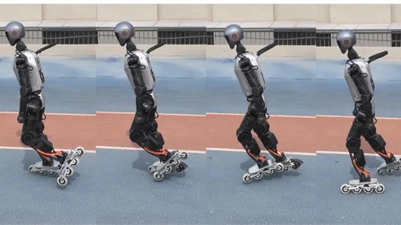

Qmini Bipedal Robot
Built and adapted an open-source 12-DoF biped, working through mechanical assembly, electronics integration, standing-pose calibration, and motion-control debugging.

I am an undergraduate in the Department of Automation at Tsinghua University, expecting to graduate in 2029. I work in the Robot Control Laboratory with Prof. Mingguo Zhao and am a member of the Tsinghua Hephaestus humanoid soccer team.
Research interests: robot learning, reinforcement and imitation learning, humanoid locomotion, contact dynamics, and sim-to-real transfer.
My research focuses on learning humanoid skills from demonstrations and bringing them onto real robots. I currently lead a project on passive-wheel humanoid roller-skating, connecting motion priors, contact modeling, and hardware experiments.
I am interested in summer research and academic exchange opportunities in robot learning. Please feel free to get in touch.

Bachelor of Engineering in Automation
Department of Automation · Beijing, China
GPA: 3.7 / 4.0

Booster T1 · Real-robot demonstrations
Human skating demonstrations guide AMP-PPO policies for Pump Glide and Push Glide on a humanoid with passive skate wheels. The work combines wheel-contact modeling, simulation evaluation, and qualitative hardware demonstrations.
arXiv ↗PDF ↗Project website ↗Demo video ↗
* Equal contribution. Presented in Cranfield, UK, September 2026.
Built and adapted an open-source 12-DoF biped, working through mechanical assembly, electronics integration, standing-pose calibration, and motion-control debugging.

Modeled a curved-foot passive biped in MATLAB with continuous dynamics and impact resets. Analyzed fixed points of the step-to-step return map and checked 48 parameter settings using 50-step perturbation simulations.
Developed high-speed obstacle avoidance and navigation for returning to the field and reaching assigned positions. Worked with teammates on integration and competition debugging for RoboCup and the World Humanoid Robot Games.
Competition results are team awards.
Comprehensive Excellence Award, Tsinghua University.

Champion with Tsinghua Hephaestus, Incheon, Republic of Korea.

Champion with Tsinghua Hephaestus; large-robot category in 2026.
First Prize (Champion), and Champion of the Technical Challenge.
First Prize · Team Captain.

Selected for the 20th cohort of the student innovation talent program.
First Prize · Deputy Team Captain, Department of Automation.
Tsinghua University.
As Vice President for General Affairs, I coordinate reporting, liaison with the Tang Foundation, and volunteer recruitment. Previously, I served as Head of General Affairs.
Led a 17-member team on an eight-day field study of embodied intelligence, drones, and autonomous driving in Guangdong. In Fangzheng, Heilongjiang, I led a 15-member rural revitalization team, organized robotics outreach, and helped establish an online teaching program at a local primary school.